材料
本站支持中英文站内搜索。带 ↗ 的链接指向外部网站；各页来源版本见页脚。
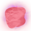 | 过时 此页已标记为 过时。此页信息需要审阅、更新，无关内容应删除。 |
矿石
 黑金属碎片——由丑地精、丑地精狂战士及丑地精萨满掉落。
黑金属碎片——由丑地精、丑地精狂战士及丑地精萨满掉落。 铜矿——从黑暗林山铜矿脉开采。
铜矿——从黑暗林山铜矿脉开采。 铜碎屑——破坏迷雾之地中特定矮人建筑。
铜碎屑——破坏迷雾之地中特定矮人建筑。 焰金属矿——从灰烬之地的炎金属矿脉开采。
焰金属矿——从灰烬之地的炎金属矿脉开采。 石化组织——破坏石化巨魔长老。
石化组织——破坏石化巨魔长老。 废铁——从幽暗沼泽的泥泞的废料堆开采，在地下圣堂宝箱拾取，或从迷雾之地的上古之剑及远古护甲开采。
废铁——从幽暗沼泽的泥泞的废料堆开采，在地下圣堂宝箱拾取，或从迷雾之地的上古之剑及远古护甲开采。 银矿——用愿望骨定位凛冽雪山的矿脉开采。
银矿——用愿望骨定位凛冽雪山的矿脉开采。 锡矿——从黑暗林山水体附近的锡矿源开采，有时也由木桶掉落。
锡矿——从黑暗林山水体附近的锡矿源开采，有时也由木桶掉落。
金属锭
 黑金属——在高炉精炼黑金属碎片。
黑金属——在高炉精炼黑金属碎片。 血金——在高炉精炼石化组织。
血金——在高炉精炼石化组织。 青铜——在熔炉组合两份铜及一份锡制作。
青铜——在熔炉组合两份铜及一份锡制作。 铜——在冶炼炉精炼铜矿。
铜——在冶炼炉精炼铜矿。 焰金属——在高炉精炼焰金属矿。
焰金属——在高炉精炼焰金属矿。 铁——在冶炼炉精炼废铁，或从宝箱拾取。
铁——在冶炼炉精炼废铁，或从宝箱拾取。 银——在冶炼炉精炼银矿。
银——在冶炼炉精炼银矿。 锡——在冶炼炉精炼锡矿。
锡——在冶炼炉精炼锡矿。
木材
 古树皮——幽暗沼泽中的上古之树。
古树皮——幽暗沼泽中的上古之树。 灰烬之木——灰烬之地中的灰烬之树。
灰烬之木——灰烬之地中的灰烬之树。 圆木——黑暗林山中的松树，或青青草原中的斜棚。
圆木——黑暗林山中的松树，或青青草原中的斜棚。 细木——桦树、橡树树木，或黑暗林山中的沉船。
细木——桦树、橡树树木，或黑暗林山中的沉船。 巨木——巨木冷杉，或极北之地中的树枝。
巨木——巨木冷杉，或极北之地中的树枝。 木材——所有树木、地面树枝，或灰矮人掉落。
木材——所有树木、地面树枝，或灰矮人掉落。 世界之树木——迷雾之地中的世界树嫩枝。
世界之树木——迷雾之地中的世界树嫩枝。
 蓝莓——黑暗林山中的灌木。
蓝莓——黑暗林山中的灌木。 胡萝卜——用耕地耙种植胡萝卜种子。
胡萝卜——用耕地耙种植胡萝卜种子。 云莓——北境平原中的灌木。
云莓——北境平原中的灌木。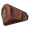
煮熟的灰烬刚鬣尾——在烹饪台烹饪灰烬刚鬣尾。 熟巨熊肉——在烹饪台烹饪巨熊肉。
熟巨熊肉——在烹饪台烹饪巨熊肉。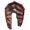
熟骨骺蛟龙肉——在铁烹饪台烹饪骨骺蛟龙肉。 熟鹿肉——在烹饪台烹饪鹿肉。
熟鹿肉——在烹饪台烹饪鹿肉。 熟鱼肉——在烹饪台烹饪生鱼肉。
熟鱼肉——在烹饪台烹饪生鱼肉。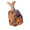
熟平原牦牛肉——在铁烹饪台烹饪平原牦牛肉。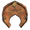
熟深海蛟龙肉——在铁烹饪台烹饪蛟龙肉。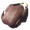
煮熟的灰烬之鹫肉——在烹饪台烹饪灰烬之鹫肉。 蕨菜花——灰烬之地地面。
蕨菜花——灰烬之地地面。 蜂蜜——玩家建造的蜂房生产，或废弃房屋中的野生蜂巢掉落。
蜂蜜——玩家建造的蜂房生产，或废弃房屋中的野生蜂巢掉落。 巨人泡泡——迷雾之地地面。
巨人泡泡——迷雾之地地面。 羽衣甘蓝——用耕地耙种植羽衣甘蓝种子。
羽衣甘蓝——用耕地耙种植羽衣甘蓝种子。- 越橘——极北之地中的灌木。
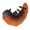
荧光幼虫——位于蜿蜒隧道。 法师帽菇——迷雾之地地面。
法师帽菇——迷雾之地地面。 蘑菇——青青草原及黑暗林山地面。
蘑菇——青青草原及黑暗林山地面。 燕麦奶——在蜜酒壶用燕麦粉及冰霜制作。
燕麦奶——在蜜酒壶用燕麦粉及冰霜制作。 洋葱——用耕地耙种植洋葱种子。
洋葱——用耕地耙种植洋葱种子。- 洋芋儿——用耕地耙种植洋芋儿种子。
 覆盆子——青青草原中的灌木。
覆盆子——青青草原中的灌木。 皇家果冻——腐疫矿区中的堆积物，或邪蛛幼雏掉落。
皇家果冻——腐疫矿区中的堆积物，或邪蛛幼雏掉落。 余烬泡泡——灰烬之地地面。
余烬泡泡——灰烬之地地面。- 芜菁——用耕地耙种植芜菁种子。
 酒莓束——灰烬之地中的建筑，或用耕地耙种植灰烬藤蔓种子。
酒莓束——灰烬之地中的建筑，或用耕地耙种植灰烬藤蔓种子。 黄蘑菇——诡秘墓穴、地下圣堂及巨魔洞穴内部地面。
黄蘑菇——诡秘墓穴、地下圣堂及巨魔洞穴内部地面。
生食材
- 面包胚——在铸铁锅用大麦面粉制作。
 生鱼肉——在铸铁锅用各类鱼制作。
生鱼肉——在铸铁锅用各类鱼制作。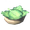
生羽衣甘蓝脆片——在铸铁锅用羽衣甘蓝制作。- 未烘焙平原牦牛派——在铸铁锅用大麦面粉、云莓及平原牦牛肉制作。
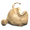
生的鱼和面包——在铸铁锅用琵琶鱼及面包胚制作。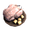
生的甜蜜烤鸡——在铸铁锅用鸡肉、蜂蜜及巨人泡泡制作。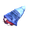
生的酿菇菇——在铸铁锅用法师帽菇、血块及芜菁制作。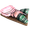
生的肉类拼盘——在铸铁锅用邪蛛肉、平原牦牛肉及野兔肉制作。- 生的迷雾野兔至尊餐——在铸铁锅用野兔肉、巨人泡泡及胡萝卜制作。
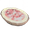
未烘焙辛辣派派——在铸铁锅用灰烬刚鬣尾、酒莓束及大麦面粉制作。 未烘焙的烘烤酥派——在铸铁锅用灰烬之鹫蛋、酒莓束及大麦面粉制作。
未烘焙的烘烤酥派——在铸铁锅用灰烬之鹫蛋、酒莓束及大麦面粉制作。
蜜酒 基础
- 大麦酒主成分：抗火——在铸铁锅用大麦及云莓制作。
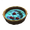
蜜酒主成分：抗霜——在铸铁锅用蜂蜜、蓟草、血袋及灰矮人之眼制作。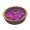
蜜酒主成分：持久埃达之力——在发酵桶用汁液、酒莓束及法师帽菇制作。- 蜜酒主成分：持久生命值——在发酵桶用汁液、酒莓束及余烬泡泡制作。
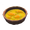
蜜酒主成分：长效耐力——在发酵桶用汁液、云莓及巨人泡泡制作。- 蜜酒主成分：大份治疗——在发酵桶用蜂蜜、血块及皇家果冻制作。
- 蜜酒主成分：中份治疗——在铸铁锅用蜂蜜、血袋、覆盆子及蒲公英制作。
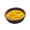
蜜酒主成分：中份耐力——在铸铁锅用蜂蜜、云莓及黄蘑菇制作。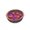
蜜酒主成分：小份埃达之力——在发酵桶用蜂蜜、汁液、巨人泡泡及法师帽菇制作。- 蜜酒主成分：小份治疗——在铸铁锅用蜂蜜、蓝莓、覆盆子及蒲公英制作。
- 蜜酒主成分：小份耐力——在铸铁锅用蜂蜜、覆盆子及黄蘑菇制作。
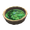
蜜酒主成分：抗毒——在铸铁锅用蜂蜜、蓟草、蜥蜴精尾巴及木炭制作。- 蜜酒主成分：可口——在铸铁锅用蜂蜜、覆盆子及蓝莓制作。
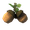
橡果——砍伐橡树树。 大麦——北境平原地面，或用耕地耙种植大麦。
大麦——北境平原地面，或用耕地耙种植大麦。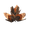
山毛榉种子——砍伐山毛榉树。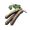
桦树种子——砍伐桦树树。 胡萝卜种子——黑暗林山地面，或用耕地耙种植胡萝卜。
胡萝卜种子——黑暗林山地面，或用耕地耙种植胡萝卜。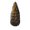
冷杉球果——砍伐冷杉树。 亚麻——北境平原地面，或用耕地耙种植亚麻。
亚麻——北境平原地面，或用耕地耙种植亚麻。 羽衣甘蓝种子——极北之地地面，或用耕地耙种植羽衣甘蓝种子。
羽衣甘蓝种子——极北之地地面，或用耕地耙种植羽衣甘蓝种子。 燕麦种子——极北之地中废弃村落粮仓，或用耕地耙种植燕麦种子。
燕麦种子——极北之地中废弃村落粮仓，或用耕地耙种植燕麦种子。 洋葱种子——凛冽雪山宝箱，或用耕地耙种植洋葱。
洋葱种子——凛冽雪山宝箱，或用耕地耙种植洋葱。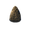
松果——砍伐松树树。 洋芋儿种子——极北之地中废弃村落粮仓，或用耕地耙种植洋芋儿种子。
洋芋儿种子——极北之地中废弃村落粮仓，或用耕地耙种植洋芋儿种子。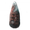
巨木冷杉果——砍伐巨木冷杉。 芜菁种子——幽暗沼泽地面，或用耕地耙种植芜菁。
芜菁种子——幽暗沼泽地面，或用耕地耙种植芜菁。 灰烬藤蔓种子——采集酒莓束。
灰烬藤蔓种子——采集酒莓束。
钓鱼 鱼饵
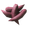
鱼饵——由霍尔德出售。
生物 掉落物
 灰烬刚鬣膀胱——由灰烬刚鬣掉落。
灰烬刚鬣膀胱——由灰烬刚鬣掉落。 灰烬刚鬣皮——由灰烬刚鬣掉落。
灰烬刚鬣皮——由灰烬刚鬣掉落。 灰烬刚鬣尾——由灰烬刚鬣掉落。
灰烬刚鬣尾——由灰烬刚鬣掉落。 巨熊毛皮——由巨熊掉落。
巨熊毛皮——由巨熊掉落。 巨熊肉——由巨熊掉落。
巨熊肉——由巨熊掉落。 熊掌——由巨熊掉落。
熊掌——由巨熊掉落。- 胆汁袋——由壁虱后掉落。
 血袋——由蚂蟥掉落。
血袋——由蚂蟥掉落。 血块——由壁虱幼虫掉落。
血块——由壁虱幼虫掉落。- 鬓猪肉——由鬓猪掉落。
 白骨碎片——由骷髅怪掉落。
白骨碎片——由骷髅怪掉落。 骨骺蛟龙肉——由骨骺蛟龙掉落。
骨骺蛟龙肉——由骨骺蛟龙掉落。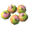
兔兔梅——由灰矮人萨满及丑地精萨满掉落。 甲壳——由邪蛛探索者及邪蛛侦察兵掉落。
甲壳——由邪蛛探索者及邪蛛侦察兵掉落。 天境之羽——由坠落女武神掉落。
天境之羽——由坠落女武神掉落。 锁链——由鬼魅掉落，或幽暗沼泽宝箱。
锁链——由鬼魅掉落，或幽暗沼泽宝箱。 死黏团——由六面浆块、无形黏团及超小浆块掉落。
死黏团——由六面浆块、无形黏团及超小浆块掉落。 鹿皮——由鹿掉落。
鹿皮——由鹿掉落。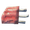
鹿肉——由鹿掉落。 厄妖毛束——由厄妖掉落。
厄妖毛束——由厄妖掉落。 内脏——由尸鬼及尸鬼精英掉落。
内脏——由尸鬼及尸鬼精英掉落。 羽毛——由海鸥、乌鸦、母鸡及灰烬之鹫掉落，或砍树获得。
羽毛——由海鸥、乌鸦、母鸡及灰烬之鹫掉落，或砍树获得。- 霜龙淋巴——由霜龙掉落。
 冰火精华——由堕落战士掉落。
冰火精华——由堕落战士掉落。 冰冻树枝——由灰巨人掉落。
冰冻树枝——由灰巨人掉落。 灰矮人之眼——各类灰矮人掉落。
灰矮人之眼——各类灰矮人掉落。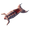
野兔肉——由野兔掉落。 皮革碎片——由鬓猪及邪蝠掉落，或从地下圣堂的泥泞的废料堆开采。
皮革碎片——由鬓猪及邪蝠掉落，或从地下圣堂的泥泞的废料堆开采。 长爪——由无眼者掉落。
长爪——由无眼者掉落。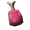
平原牦牛肉——由平原牦牛掉落。 平原牦牛皮——由平原牦牛掉落。
平原牦牛皮——由平原牦牛掉落。 下颌骨——由邪蛛侦察兵掉落。
下颌骨——由邪蛛侦察兵掉落。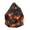
纪念用炭——由巨人战士掉落，或破坏莫克哈拉中的火坑。 驼鹿毛皮——由驼鹿掉落。
驼鹿毛皮——由驼鹿掉落。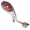
驼鹿肉——由驼鹿掉落。 驼鹿腱——由驼鹿掉落。
驼鹿腱——由驼鹿掉落。 摩根之心——由摩根掉落。
摩根之心——由摩根掉落。 摩根之腱——由摩根掉落。
摩根之腱——由摩根掉落。 蜥蜴精尾巴——由蜥蜴精掉落。
蜥蜴精尾巴——由蜥蜴精掉落。 毒针——由杀人蜂掉落。
毒针——由杀人蜂掉落。 北境丝线——由巨人巫师掉落。
北境丝线——由巨人巫师掉落。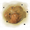
软泥——由软泥怪及软泥掉落。 邪煞之根——由邪煞之树掉落。
邪煞之根——由邪煞之树掉落。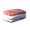
海豹油脂——由海豹掉落。 海豹毛皮——由海豹掉落。
海豹毛皮——由海豹掉落。 邪蛛肉——由邪蛛探索者及邪蛛侦察兵掉落。
邪蛛肉——由邪蛛探索者及邪蛛侦察兵掉落。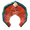
蛟龙肉——由蛟龙掉落。 蛟龙鳞——由蛟龙掉落。
蛟龙鳞——由蛟龙掉落。 鳞皮——由野兔掉落。
鳞皮——由野兔掉落。 焰灵之核——诡秘墓穴内部，或焰灵掉落。
焰灵之核——诡秘墓穴内部，或焰灵掉落。 焦油——焦油坑中，或焦油怪掉落。
焦油——焦油坑中，或焦油怪掉落。 雷血精华——由堕落战士掉落。
雷血精华——由堕落战士掉落。- 巨魔皮——由巨魔掉落。
 灰烬之鹫蛋——由灰烬之鹫掉落。
灰烬之鹫蛋——由灰烬之鹫掉落。 灰烬之鹫肉——由灰烬之鹫掉落。
灰烬之鹫肉——由灰烬之鹫掉落。 狼牙——由巨狼、芬里及乌尔夫掉落。
狼牙——由巨狼、芬里及乌尔夫掉落。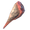
狼肉——由巨狼掉落。 狼皮——由巨狼掉落。
狼皮——由巨狼掉落。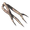
扭曲根须——由扭曲者掉落。
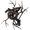
邪煞之树战利品——由邪煞之树掉落。 灰烬刚鬣战利品——由灰烬刚鬣掉落。
灰烬刚鬣战利品——由灰烬刚鬣掉落。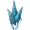
灰巨人战利品——由灰巨人掉落。 巨熊战利品——由巨熊掉落。
巨熊战利品——由巨熊掉落。 软泥怪战利品——由软泥怪掉落。
软泥怪战利品——由软泥怪掉落。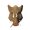
鬓猪战利品——由鬓猪掉落。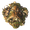
邪骨恶灵战利品——由邪骨恶灵掉落。- 骨骺蛟龙战利品——由骨骺蛟龙掉落。
- 如火娜娜战利品——由布伦娜掉落。
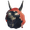
狂信徒战利品——由狂信徒掉落。- 杀人蜂战利品——由杀人蜂掉落。
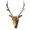
鹿战利品——由鹿掉落。 霜龙战利品——由霜龙掉落。
霜龙战利品——由霜龙掉落。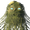
尸鬼战利品——由尸鬼掉落。 精英尸鬼战利品——由尸鬼精英掉落。
精英尸鬼战利品——由尸鬼精英掉落。 矮人战利品——由矮人掉落。
矮人战利品——由矮人掉落。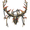
赤血灵鹿战利品——由赤血灵鹿掉落。- 厄妖战利品——由厄妖掉落。
- 无眼者战利品——由无眼者掉落。
 青焰龙王战利品——由青焰龙王掉落。
青焰龙王战利品——由青焰龙王掉落。 坠落女武神战利品——由坠落女武神掉落。
坠落女武神战利品——由坠落女武神掉落。 芬里战利品——由芬里掉落。
芬里战利品——由芬里掉落。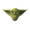
丑地精战利品——由丑地精掉落。 丑地精狂战士战利品——由丑地精狂战士掉落。
丑地精狂战士战利品——由丑地精狂战士掉落。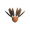
丑地精萨满战利品——由丑地精萨满掉落。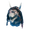
如冰杰杰战利品——由盖尔哈法掉落。- 邪灵战利品——由幽灵掉落。
 壁虱后战利品——由壁虱后掉落。
壁虱后战利品——由壁虱后掉落。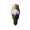
灰矮人战利品——由灰矮人掉落。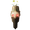
灰矮人暴徒战利品——由灰矮人暴徒掉落。 灰矮人萨满战利品——由灰矮人萨满掉落。
灰矮人萨满战利品——由灰矮人萨满掉落。 焦油怪战利品——由焦油怪掉落。
焦油怪战利品——由焦油怪掉落。- 野兔战利品——由野兔掉落。
 巨人巫师战利品——由巨人巫师掉落。
巨人巫师战利品——由巨人巫师掉落。- 巨人战士战利品——由巨人战士掉落。
- 巫师扫帚热带——由巫师扫帚掉落。
 蚂蟥战利品——由蚂蟥掉落。
蚂蟥战利品——由蚂蟥掉落。 平原牦牛战利品——由氧化物掉落。
平原牦牛战利品——由氧化物掉落。- 灰烬射手战利品——由灰烬亡灵标记掉落。
 冰霜龙母战利品——由冰霜龙母掉落。
冰霜龙母战利品——由冰霜龙母掉落。 驼鹿战利品——由驼鹿掉落。
驼鹿战利品——由驼鹿掉落。 摩根战利品——由摩根掉落。
摩根战利品——由摩根掉落。- 蜥蜴精战利品——由蜥蜴精掉落。
- 腐臭遗骸战利品——由腐臭遗骸掉落。
- 海豹战利品——由海豹掉落。
 邪蛛战利品——由邪蛛探索者掉落。
邪蛛战利品——由邪蛛探索者掉落。- 邪蛛侦察兵战利品——由邪蛛侦察兵掉落。
 蛟龙战利品——由蛟龙掉落。
蛟龙战利品——由蛟龙掉落。 浆块战利品——由无形黏团掉落。
浆块战利品——由无形黏团掉落。- 枯骨战利品——由骷髅怪掉落。
 石魔哥伦战利品——由石魔掉落。
石魔哥伦战利品——由石魔掉落。 焰灵战利品——由焰灵掉落。
焰灵战利品——由焰灵掉落。 古树长老战利品——由古树长老掉落。
古树长老战利品——由古树长老掉落。 蛊虫之后战利品——由蛊虫之后掉落。
蛊虫之后战利品——由蛊虫之后掉落。- 如铁葛葛战利品——由吞格尔掉落。
- 壁虱战利品——由壁虱幼虫掉落。
- 巨魔战利品——由巨魔掉落。
- 巨狼战利品——由乌尔夫掉落。
- 邪骨战利品——由恶骨掉落。
- 灰烬之鹫战利品——由灰烬之鹫掉落。
- 灰烬术士战利品——由灰烬术士掉落。
- 灰烬战士战利品——由灰烬战士掉落。
- 狼战利品——由巨狼掉落。
- 鬼魅战利品——由鬼魅掉落。
 亚格鲁斯战利品——由亚格鲁斯掉落。
亚格鲁斯战利品——由亚格鲁斯掉落。- 如风吉吉战利品——由吉尔掉落。
弃誓者祭坛 供品
 上古种子——由灰矮人巢穴及灰矮人暴徒掉落。
上古种子——由灰矮人巢穴及灰矮人暴徒掉落。 龙蛋——凛冽雪山巢穴地面。
龙蛋——凛冽雪山巢穴地面。 丑地精图腾——地精村落地面，或丑地精狂战士掉落。
丑地精图腾——地精村落地面，或丑地精狂战士掉落。 封印破除者碎片——腐疫矿区地面。
封印破除者碎片——腐疫矿区地面。- 封印破除者——在古咒法台用封印破除者碎片制作。
 枯骨——从地下圣堂的泥泞的废料堆开采，或幽暗沼泽宝箱。
枯骨——从地下圣堂的泥泞的废料堆开采，或幽暗沼泽宝箱。
首领 掉落物
制作成品
- 大麦面粉——在风车用大麦制作。
- 青铜钉——在熔炉用青铜制作。
 木炭——在木炭窑使用木材、细木或圆木；让任意肉在烹饪台烧焦；在湮灭者使用任意物品；或焰灵掉落。
木炭——在木炭窑使用木材、细木或圆木；让任意肉在烹饪台烧焦；在湮灭者使用任意物品；或焰灵掉落。 矮人灯笼——在黑熔炉用青铜、焰灵之核及水晶制作，或在矮人建筑及迷雾之地的腐疫矿区找到。
矮人灯笼——在黑熔炉用青铜、焰灵之核及水晶制作，或在矮人建筑及迷雾之地的腐疫矿区找到。- 铁钉——在熔炉用铁制作。
 亚麻线——在纺车用亚麻制作。
亚麻线——在纺车用亚麻制作。 机械弹簧——在工匠台用埃达精华及铁制作。
机械弹簧——在工匠台用埃达精华及铁制作。- 燕麦粉——在风车用燕麦制作。
- 燕麦——在风车用燕麦种子制作。
 埃达精华——在埃达之力提炼器用汁液及软组织制作。
埃达精华——在埃达之力提炼器用汁液及软组织制作。 磨刀石——在切石机用石头制作。
磨刀石——在切石机用石头制作。
宝石
杂项
 黑暗之核——迷雾之地中的腐疫矿区。
黑暗之核——迷雾之地中的腐疫矿区。 黑大理石——迷雾之地中的矮人建筑，或迷雾之地中的巨人遗骸。
黑大理石——迷雾之地中的矮人建筑，或迷雾之地中的巨人遗骸。 蓝黄麻——来自迷雾之地中的矮人建筑。
蓝黄麻——来自迷雾之地中的矮人建筑。 甲壳素——从无尽之海中利维坦上的深渊藤壶开采。
甲壳素——从无尽之海中利维坦上的深渊藤壶开采。 水晶——由石魔掉落，或在冰霜洞穴成簇找到。
水晶——由石魔掉落，或在冰霜洞穴成簇找到。 蒲公英——青青草原地面，或灰矮人暴徒掉落。
蒲公英——青青草原地面，或灰矮人暴徒掉落。 矮人提取器——迷雾之地中的矮人板条箱。
矮人提取器——迷雾之地中的矮人板条箱。 鸡蛋——由霍尔德出售，或母鸡生产。
鸡蛋——由霍尔德出售，或母鸡生产。- 芬里之爪——位于冰霜洞穴。
- 芬里之发——位于冰霜洞穴。
 燧石——青青草原水体附近。
燧石——青青草原水体附近。- 树脓——从幽暗沼泽树上用斧或镐采集，或邪煞之树掉落。
 冰霜之核——位于蜿蜒隧道。
冰霜之核——位于蜿蜒隧道。 冰霜——来自极北之地的灰矮人、灰矮人萨满及骷髅怪，或从极北之地的冰层、冰池及各种冰封建筑开采。
冰霜——来自极北之地的灰矮人、灰矮人萨满及骷髅怪，或从极北之地的冰层、冰池及各种冰封建筑开采。 黑曜石——在凛冽雪山开采。
黑曜石——在凛冽雪山开采。- 蜂后——青青草原野生蜂巢掉落。
 红色黄麻——凛冽雪山中的冰霜洞穴，或狂信徒掉落。
红色黄麻——凛冽雪山中的冰霜洞穴，或狂信徒掉落。 树脂——砍树，或各类灰矮人掉落。
树脂——砍树，或各类灰矮人掉落。 汁液——从迷雾之地中放在远古树根上的汁液提取器收集。
汁液——从迷雾之地中放在远古树根上的汁液提取器收集。- 雪球——极北之地地面，极北之地的灰矮人掉落，或用冰霜制作。
 软组织——从迷雾之地的巨人遗骸头骨内部开采，或迷雾之地的矮人箱子。
软组织——从迷雾之地的巨人遗骸头骨内部开采，或迷雾之地的矮人箱子。 石头——多数生物群系地面，从岩石、矿床及地面开采，或灰矮人及石魔掉落。
石头——多数生物群系地面，从岩石、矿床及地面开采，或灰矮人及石魔掉落。 灰石——从灰烬之地岩石开采。
灰石——从灰烬之地岩石开采。 蓟草——黑暗林山及幽暗沼泽地面。
蓟草——黑暗林山及幽暗沼泽地面。- 雷电石——由霍尔德出售。
- 冥火——夜间在冥火之泉周围找到。
- 尤弥尔之身——由霍尔德出售。
| Outdated This page has been marked to be outdated. The information on this page needs to be reviewed and updated or deleted if no relevance. |
Materials are items used for building or for crafting other items.
Ores
- Black Metal Scrap – Dropped by Fulings, Fuling Berserkers, and Fuling Shamans.
- Copper Ore – Mined from copper veins in the Black Forest.
- Copper Scrap – Destroying certain Dvergr structures in the Mistlands.
- Flametal Ore – Mined from Flametal Ore Veins in the Ashlands.
- Petrified Tissue – Destroying Petrified Gammeltrolls.
- Scrap Iron – Mined from Muddy Scrap Piles in the Swamp. Looted from chests in Sunken Crypts. Mined from Ancient Swords and Ancient Armor in the Mistlands.
- Silver Ore – Mined from veins in the Mountains located with the Wishbone.
- Tin Ore – Mined from Tin Deposits found near bodies of water in the Black Forest, also sometimes drops from Barrels.
Ingots
- Black Metal – Refined in a Blast Furnace from Black Metal Scrap.
- Bloodgold – Refined in a Blast Furnace from Petrified Tissue.
- Bronze – Crafted at a Forge by combining two Copper with one Tin.
- Copper – Refined in a Smelter from Copper Ore.
- Flametal – Refined in a Blast Furnace from Flametal Ore.
- Iron – Refined in a Smelter from Scrap Iron. Looted from chests.
- Silver – Refined in a Smelter from Silver Ore.
- Tin – Refined in a Smelter from Tin Ore.
Woods
- Ancient Bark – Ancient Trees in the Swamp.
- Ashwood – Scorched Trees in the Ashlands.
- Corewood – Pine in the Black Forest. Leanto shelters in the Meadows.
- Finewood – Birch and Oak trees. Shipwrecks in the Black Forest.
- Timberwood – Timber Tree. Branches in the Deep North.
- Wood – All trees. Branches on the ground. Dropped by Greydwarfs.
- Yggdrasil Wood – Yggdrasil Shoots in the Mistlands.
- Blueberries – Bushes in the Black Forest.
- Carrot – Grown from planting Carrot Seeds using the Cultivator tool.
- Cloudberries – Bushes in the Plains.
- Cooked asksvin tail – Cook Asksvin Tail on a Cooking Station.
- Cooked bear meat - Cook Bear Meat on a Cooking Station.
- Cooked bonemaw meat – Cook Bonemaw Meat on an Iron Cooking Station.
- Cooked deer meat – Cook Deer Meat on a Cooking Station.
- Cooked fish – Cook Raw Fish on a Cooking Station.
- Cooked lox meat - Cook Lox Meat on an Iron Cooking Station.
- Cooked serpent meat – Cook Serpent Meat on an Iron Cooking Station.
- Cooked volture meat – Cook Volture Meat on a Cooking Station.
- Fiddlehead – On the ground in the Ashlands.
- Honey – Produced by player-built Beehives. Dropped from wild beehives found in Abandoned Houses.
- Jotun Puffs – On the ground in the Mistlands.
- Kale – Grown from Kale Seeds using the Cultivator tool.
- Lingonberries – Bushes in the Deep North.
- Luminous Larva – Found in Winding Tunnels.
- Magecap – On the ground in the Mistlands.
- Mushroom – On the ground in the Meadows and Black Forest.
- Oat Milk – Crafted from Oat Flour and Ice at a Mead Ketill.
- Onion – Grown from planting Onion Seeds using the Cultivator tool.
- Poteitr – Grown from plating Seed Poteitr using the Cultivator tool]].
- Raspberries – Bushes in the Meadows.
- Royal Jelly – Found in piles in Infested Mines. Dropped by Seeker Brood.
- Smoke Puff – On the ground in the Ashlands.
- Turnip – Grown from planting Turnip Seeds using the Cultivator tool.
- Vineberry Cluster – On edifications in the Ashlands. Grown from planting Vineberry Seeds using the Cultivator tool.
- Yellow Mushroom – On the floor inside Burial Chambers, Sunken Crypts and Troll Caves.
Uncooked food
- Bread Dough – Crafted from Barley Flour at a Cauldron.
- Raw Fish – Crafted from all types of Fish at a Cauldron.
- Raw Kale Chips – Crafted from Kale at a Cauldron.
- Unbaked Lox Pie – Crafted from Barley Flour, Cloudberries and Lox Meat at a Cauldron.
- Uncooked Fish 'n' Bread – Crafted from Anglerfish and Bread Dough at a Cauldron.
- Uncooked Honey Glazed Chicken – Crafted from Chicken Meat, Honey and Jotun Puffs at a Cauldron.
- Uncooked Stuffed Mushroom – Crafted from Magecap, Blood Clot and Turnip at a Cauldron.
- Uncooked Meat Platter – Crafted from Seeker Meat, Lox Meat and Hare Meat at a Cauldron.
- Uncooked Misthare Supreme – Crafted from Hare Meat, Jotun Puffs and Carrot at a Cauldron.
- Uncooked Piquant Pie – Crafted from Asksvin Tail, Vineberry Cluster and Barley Flour at a Cauldron.
- Uncooked Roasted Crust Pie – Crafted from Volture egg, Vineberry Cluster and Barley Flour at a Cauldron.
Mead base
- Barley Wine Base: Fire Resistance – Made from Barley and Cloudberries at a Cauldron.
- Mead Base: Frost Resistance – Made from Honey, Thistle, Bloodbag and Greydwarf Eye at a Cauldron.
- Mead Base: Lingering Eitr – Made from Sap, Vineberry Cluster and Magecap at a Fermenter.
- Mead Base: Lingering Health – Made from Sap, Vineberry Cluster and Smoke Puff at a Fermenter.
- Mead Base: Lingering Stamina – Made from Sap, Cloudberries and Jotun Puffs at a Fermenter.
- Mead Base: Major Healing – Made from Honey, Blood Clot and Royal Jelly at a Fermenter.
- Mead Base: Medium Healing – Made from Honey, Bloodbag, Raspberries and Dandelion at a Cauldron.
- Mead Base: Medium Stamina – Made from Honey, Cloudberries and Yellow Mushroom at a Cauldron.
- Mead Base: Minor Eitr – Made from Honey, Sap, Jotun Puffs and Magecap at a Fermenter.
- Mead Base: Minor Healing – Made from Honey, Blueberries, Raspberries and Dandelion at a Cauldron.
- Mead Base: Minor Stamina – Made from Honey, Raspberries and Yellow Mushroom at a Cauldron.
- Mead Base: Poison Resistance – Made from Honey, Thistle, Neck Tail and Coal at a Cauldron.
- Mead Base: Tasty – Made from Honey, Raspberries and Blueberries at a Cauldron.
- Acorns – Chopping down Oak trees.
- Barley – On the ground in the Plains. Grown from Barley using the Cultivator tool.
- Beech Seeds – Chopping down Beech trees.
- Birch Seeds – Chopping down Birch trees.
- Carrot Seeds – On the ground in the Black Forest. Grown from Carrots using the Cultivator tool.
- Fir Cone – Chopping down Fir trees.
- Flax – On the ground in the Plains. Grown from Flax using the Cultivator tool.
- Kale Seeds – On the ground in the Deep North. Grown from Kale Seeds using the Cultivator tool.
- Oat Seeds – Found in the granary of Abandoned Villages in the Deep North. Grown from Oat Seeds using the Cultivator tool.
- Onion Seeds – Chests in the Mountains. Grown from Onions using the Cultivator tool.
- Pine Cone – Chopping down Pine trees.
- Seed Poteitr – Found in the granary of Abandoned Villages in the Deep North. Grown from Seed Poteitr using the Cultivator tool.
- Timberwood Cone – Chopping down Timber Trees.
- Turnip Seeds – On the ground in the Swamp. Grown from Turnips using the Cultivator tool.
- Vineberry Seeds - Harvesting Vineberry Cluster.
Fishing bait
- Fishing Bait – Sold by Haldor.
Creature drops
- Asksvin Bladder - Dropped by Asksvins.
- Asksvin Hide - Dropped by Asksvins.
- Asksvin Tail – Dropped by Asksvins.
- Bear Hide - Dropped by Bears.
- Bear Meat - Dropped by Bears.
- Bear Paw - Dropped by Bears.
- Bilebag – Dropped by Gjalls.
- Bloodbag – Dropped by Leeches.
- Blood Clot – Dropped by Ticks.
- Boar Meat – Dropped by Boars.
- Bone Fragments – Dropped by Skeletons.
- Bonemaw Meat – Dropped by Bonemaws.
- Bukeperries – Dropped by Greydwarf Shamans and Fuling Shamans.
- Carapace – Dropped by Seekers and Seeker Soldiers.
- Celestial Feather – Dropped by Fallen Valkyries.
- Chain – Dropped by Wraiths. Chests in the Swamp.
- Dead Pulp – Dropped by Hexahedric Pulp, Shapeless Pulp, and Tiny Pulp.
- Deer Hide – Dropped by Deer.
- Deer Meat – Dropped by Deer.
- Elaking Hair Bundle – Dropped by Elaking.
- Entrails – Dropped by Draugr and Draugr Elite.
- Feathers – Dropped by Gulls, Crows, Hens and Voltures. Chopping down trees.
- Freeze Gland – Dropped by Drakes.
- Frostfire Essence – Dropped by Fallen Warriors.
- Frozen Branch – Dropped by Barka.
- Greydwarf Eye – Dropped by all varieties of Greydwarfs.
- Hare Meat – Dropped by Hares.
- Leather Scraps – Dropped by Boar and Bats. Mined from Muddy Scrap Piles in Sunken Crypts.
- Long Claws – Dropped by Eyeless One.
- Lox Meat – Dropped by Lox.
- Lox Pelt – Dropped by Lox.
- Mandible – Dropped by Seeker Soldiers.
- Memorial Coal – Dropped by Krigens. Destroying fire pit in Morkhalla.
- Moose Hide – Dropped by Moose.
- Moose Meat – Dropped by Moose.
- Moose Sinew – Dropped by Moose.
- Morgen Heart - Dropped by Morgens.
- Morgen Sinew - Dropped by Morgens.
- Neck Tail – Dropped by Necks.
- Needle – Dropped by Deathsquitos.
- Nornathread – Dropped by Hexens.
- Ooze – Dropped by Blobs and Oozers.
- Root – Dropped by Abominations.
- Seal Blubber – Dropped by Seals.
- Seal Pelt – Dropped by Seals.
- Seeker Meat – Dropped by Seekers and Seeker Soldiers.
- Serpent Meat – Dropped by Serpents.
- Serpent Scale – Dropped by Serpents.
- Scale Hide – Dropped by Hares.
- Surtling Core – Inside Burial Chambers. Dropped by Surtlings.
- Tar – In Tar Pits. Dropped by Growths.
- Thunderblood Essence – Dropped by Fallen Warriors.
- Troll Hide – Dropped by Trolls.
- Volture egg – Dropped by Voltures.
- Volture Meat – Dropped by Voltures.
- Wolf Fang – Dropped by Wolves, Fenrings and Ulvs.
- Wolf Meat – Dropped by Wolves.
- Wolf Pelt – Dropped by Wolves.
- Writhan Roots – Dropped by Writhan.
- Abomination Trophy – Dropped by Abominations.
- Asksvin Trophy – Dropped by Asksvins.
- Barka Trophy – Dropped by Barka.
- Bear Trophy – Dropped by Bears.
- Blob Trophy – Dropped by Blobs.
- Boar Trophy – Dropped by Boars.
- Bonemass Trophy – Dropped by Bonemass.
- Bonemaw Trophy – Dropped by Bonemaws.
- Brenna Trophy – Dropped by Brennas.
- Cultist Trophy – Dropped by Cultists.
- Deathsquito Trophy – Dropped by Deathsquitos.
- Deer Trophy – Dropped by Deer.
- Drake Trophy – Dropped by Drakes.
- Draugr Trophy – Dropped by Draugrs.
- Draugr Elite Trophy – Dropped by Draugr Elites.
- Dvergr Trophy – Dropped by Dvergrs.
- Eikthyr Trophy – Dropped by Eikthyr.
- Elaking Trophy – Dropped by Elaking.
- Eyeless One Trophy – Dropped by Eyeless One.
- Fader Trophy – Dropped by Fader.
- Fallen Valkyrie Trophy – Dropped by Fallen Valkyries.
- Fenring Trophy – Dropped by Fenrings.
- Fuling Trophy – Dropped by Fulings.
- Fuling Berserker Trophy – Dropped by Fuling Berserkers.
- Fuling Shaman Trophy – Dropped by Fuling Shamans.
- Geirrhafa Trophy – Dropped by Geirrhafas.
- Ghost Trophy – Dropped by Ghosts.
- Gjall Trophy – Dropped by Gjalls.
- Greydwarf Trophy – Dropped by Greydwarfs.
- Greydwarf Brute Trophy – Dropped by Greydwarf Brutes.
- Greydwarf Shaman Trophy – Dropped by Greydwarf Shamans.
- Growth Trophy – Dropped by Growths.
- Hare Trophy – Dropped by Hares.
- Hexen Trophy – Dropped by Hexen.
- Krigen Trophy – Dropped by Krigen.
- Kvastur Trophy – Dropped by Kvasturs.
- Leech Trophy – Dropped by Leeches.
- Lox Trophy – Dropped by Loxes.
- Marksman Trophy – Dropped by Charred Marksmen.
- Moder Trophy – Dropped by Moder.
- Moose Trophy – Dropped by Moose.
- Morgen Trophy – Dropped by Morgens.
- Neck Trophy – Dropped by Necks.
- Rancid Remains Trophy – Dropped by Rancid Remains.
- Seal Trophy – Dropped by Seals.
- Seeker Trophy – Dropped by Seekers.
- Seeker Soldier Trophy – Dropped by Seeker Soldiers.
- Serpent Trophy – Dropped by Serpents.
- Pulp Trophy – Dropped by Shapeless Pulp.
- Skeleton Trophy – Dropped by Skeletons.
- Stone Golem Trophy – Dropped by Stone Golems.
- Surtling Trophy – Dropped by Surtlings.
- The Elder Trophy – Dropped by The Elder.
- The Queen Trophy – Dropped by The Queen.
- Thungr Trophy – Dropped by Thungr.
- Tick Trophy – Dropped by Tick.
- Troll Trophy – Dropped by Trolls.
- Ulv Trophy – Dropped by Ulvs.
- Vile Trophy – Dropped by Viles.
- Volture Trophy – Dropped by Voltures.
- Warlock Trophy – Dropped by Charred Warlocks.
- Warrior Trophy – Dropped by Charred Warriors.
- Wolf Trophy – Dropped by Wolves.
- Wraith Trophy – Dropped by Wraiths.
- Yagluth Trophy – Dropped by Yagluth.
- Zil Trophy – Dropped by Zil.
Forsaken Altar offerings
- Ancient Seed – Dropped by Greydwarf Nests and Greydwarf Brutes.
- Dragon Egg – On the ground in nests in the Mountains.
- Fuling Totem – On the ground in Fuling Villages. Dropped by Fuling Berserkers.
- Sealbreaker Fragment – On the ground in Infested Mines.
- Sealbreaker – Crafted from Sealbreaker Fragments at a Galdr Table.
- Withered Bone – Mined from Muddy Scrap Piles in Sunken Crypts. Chests in Swamps.
Boss drops
 Dragon Tear – Dropped by Moder.
Dragon Tear – Dropped by Moder.- Hard Antler – Dropped by Eikthyr.
 Kindled Ribs – Dropped by Fader.
Kindled Ribs – Dropped by Fader. Majestic Carapace – Dropped by The Queen.
Majestic Carapace – Dropped by The Queen. Swamp Key – Dropped by The Elder.
Swamp Key – Dropped by The Elder. Torn Spirit – Dropped by Yagluth.
Torn Spirit – Dropped by Yagluth.- Wishbone – Dropped by Bonemass.
Crafted
- Barley Flour – Crafted from Barley at a Windmill.
- Bronze Nails – Crafted from Bronze at a Forge.
- Coal – Use Wood, Finewood or Corewood in a Charcoal Kiln. Let any meat burn on the Cooking Station. Use any item in an Obliterator. Dropped by Surtlings.
- Dvergr Lantern – Crafted from Bronze, Surtling Cores and Crystal at Black Forge. Found at Dvergr buildings and in Infested Mines in the Mistlands.
- Iron Nails – Crafted from Iron at a Forge.
- Linen Thread – Crafted from Flax at a Spinning Wheel.
- Mechanical Spring – Crafted from Refined Eitr and Iron at an Artisan Table.
- Oat Flour – Crafted from Oats at a Windmill.
- Oats – Crafted from Oat Seeds at a Windmill.
- Refined Eitr – Crafted from Sap and Soft Tissue at an Eitr Refinery.
- Sharpening Stone – Crafted from Stone at a Stonecutter.
Gemstones
 Bloodstone – In Charred Fortresses in the Ashlands.
Bloodstone – In Charred Fortresses in the Ashlands. Iolite – In Charred Fortresses in the Ashlands.
Iolite – In Charred Fortresses in the Ashlands. Jade – In Charred Fortresses in the Ashlands.
Jade – In Charred Fortresses in the Ashlands.
Miscellaneous
- Black Core – In Infested Mines in the Mistlands.
- Black Marble – Dvergr buildings in the Mistlands. Giant Remains in the Mistlands.
- Blue Jute – From Dvergr buildings in the Mistlands.
- Chitin – Mined from Abyssal Barnacles on Leviathans in the Ocean.
- Crystal – Dropped by Stone Golems. Found in clusters in Frost Caves.
- Dandelion – On the ground in the Meadows. Dropped by Greydwarf Brutes.
- Dvergr Extractor – In Dvergr Component Crates in the Mistlands.
- Egg – Sold by Haldor. Produced by Hens.
- Fenris Claw – In Frost Caves.
- Fenris Hair – In Frost Caves.
- Flint – In the Meadows near bodies of water.
- Guck – From trees in the Swamp (harvested with an axe or pickaxe). Dropped by Abominations.
- Frostcore – Found in Winding Tunnels.
- Ice – From Greydwarfs, Greydwarf Shamans and Skeletons in the Deep North. Mined from Ice Sheets, Ice Ponds and various frozen structures in the Deep North.
- Obsidian – Mined in the Mountains.
- Queen Bee – Dropped by wild beehives in the Meadows.
- Red Jute – In Frost Caves in the Mountains. Dropped by Cultists.
- Resin – Chopping down trees. Dropped by all varieties of Greydwarfs.
- Sap – Collected from Sap Extractors placed on Ancient Roots in the Mistlands.
- Snowball – Found on the ground in the Deep North. Dropped by Greydwarfs in the Deep North. Crafted from Ice.
- Soft Tissue – Mined from inside Giant Remains skulls in the Mistlands. In Dvergr crates in the Mistlands.
- Stone – On the ground in most biomes. Mined from rocks, ore deposits, and the ground. Dropped by Greydwarfs and Stone Golems.
- Grausten - Mined from rocks in the Ashlands.
- Thistle – On the ground in the Black Forest and Swamp.
- Thunder Stone – Sold by Haldor.
- Wisp – Found around Wisp Fountains at night.
- Ymir Flesh – Sold by Haldor.